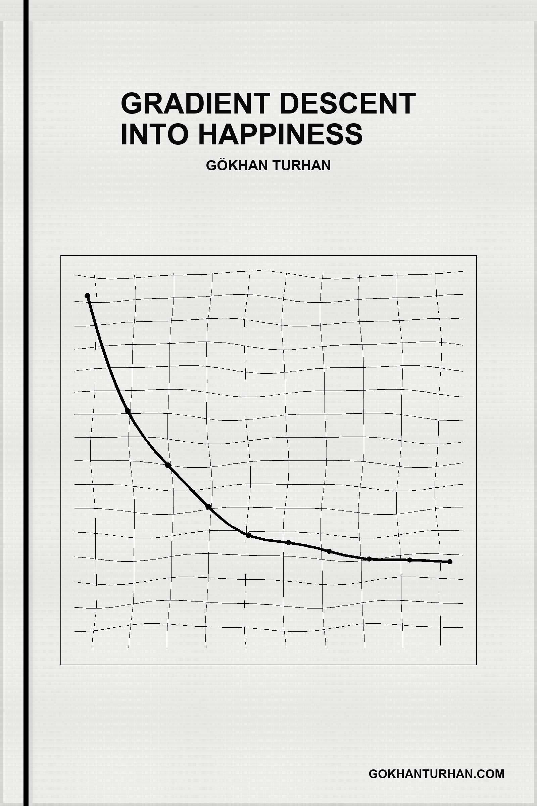

An Oulipian canto in twenty-two movements and four hundred forty lines
Gökhan Turhan
gokhanturhan.com
0001dry myths cry; wry glyphs fly.
0002my rhythms sync by myth.
0003why syncs my glyph?
0004sly lynx pry by rhythm.
0005my gym try by cwm.
0006dry gypsy try; wry lymphs cry.
0007my myths fly by sky.
0008why sync my flyby?
0009sly glyphs syncs by myth.
0010my glyph pry by rhythm.
0011dry hymns pry; wry crypts try.
0012my gypsy cry by hymn.
0013why fly my crypt?
0014sly lymphs sync by sky.
0015my flyby syncs by myth.
0016dry lynx syncs; wry myrrhs pry.
0017my hymns try by gym.
0018why cry my cwm?
0019sly crypts fly by hymn.
0020my crypt sync by sky.
0021wry glyphs try; sly rhythms cry.
0022my lynx fly by glyph.
0023why sync my rhythm?
0024spry myrrhs syncs by gym.
0025my cwm pry by hymn.
0026wry lymphs pry; sly myths try.
0027my glyphs cry by flyby.
0028why fly my myth?
0029spry rhythms sync by glyph.
0030my rhythm syncs by gym.
0031wry crypts syncs; sly gypsy pry.
0032my lymphs try by crypt.
0033why cry my sky?
0034spry myths fly by flyby.
0035my myth sync by glyph.
0036wry myrrhs sync; sly hymns syncs.
0037my crypts pry by cwm.
0038why try my hymn?
0039spry gypsy cry by crypt.
0040my sky fly by flyby.
0041sly rhythms pry; spry lynx try.
0042my myrrhs cry by rhythm.
0043why fly my gym?
0044shy hymns sync by cwm.
0045my hymn syncs by crypt.
0046sly myths syncs; spry glyphs pry.
0047my rhythms try by myth.
0048why cry my glyph?
0049shy lynx fly by rhythm.
0050my gym sync by cwm.
0051sly gypsy sync; spry lymphs syncs.
0052my myths pry by sky.
0053why try my flyby?
0054shy glyphs cry by myth.
0055my glyph fly by rhythm.
0056sly hymns fly; spry crypts sync.
0057my gypsy syncs by hymn.
0058why pry my crypt?
0059shy lymphs try by sky.
0060my flyby cry by myth.
0061spry lynx syncs; shy myrrhs pry.
0062my hymns try by gym.
0063why cry my cwm?
0064dry crypts fly by hymn.
0065my crypt sync by sky.
0066spry glyphs sync; shy rhythms syncs.
0067my lynx pry by glyph.
0068why try my rhythm?
0069dry myrrhs cry by gym.
0070my cwm fly by hymn.
0071spry lymphs fly; shy myths sync.
0072my glyphs syncs by flyby.
0073why pry my myth?
0074dry rhythms try by glyph.
0075my rhythm cry by gym.
0076spry crypts cry; shy gypsy fly.
0077my lymphs sync by crypt.
0078why syncs my sky?
0079dry myths pry by flyby.
0080my myth try by glyph.
0081shy myrrhs sync; dry hymns syncs.
0082my crypts pry by cwm.
0083why try my hymn?
0084wry gypsy cry by crypt.
0085my sky fly by flyby.
0086shy rhythms fly; dry lynx sync.
0087my myrrhs syncs by rhythm.
0088why pry my gym?
0089wry hymns try by cwm.
0090my hymn cry by crypt.
0091shy myths cry; dry glyphs fly.
0092my rhythms sync by myth.
0093why syncs my glyph?
0094wry lynx pry by rhythm.
0095my gym try by cwm.
0096shy gypsy try; dry lymphs cry.
0097my myths fly by sky.
0098why sync my flyby?
0099wry glyphs syncs by myth.
0100my glyph pry by rhythm.
0101dry hymns fly; wry crypts sync.
0102my gypsy syncs by hymn.
0103why pry my crypt?
0104sly lymphs try by sky.
0105my flyby cry by myth.
0106dry lynx cry; wry myrrhs fly.
0107my hymns sync by gym.
0108why syncs my cwm?
0109sly crypts pry by hymn.
0110my crypt try by sky.
0111dry glyphs try; wry rhythms cry.
0112my lynx fly by glyph.
0113why sync my rhythm?
0114sly myrrhs syncs by gym.
0115my cwm pry by hymn.
0116dry lymphs pry; wry myths try.
0117my glyphs cry by flyby.
0118why fly my myth?
0119sly rhythms sync by glyph.
0120my rhythm syncs by gym.
0121wry crypts cry; sly gypsy fly.
0122my lymphs sync by crypt.
0123why syncs my sky?
0124spry myths pry by flyby.
0125my myth try by glyph.
0126wry myrrhs try; sly hymns cry.
0127my crypts fly by cwm.
0128why sync my hymn?
0129spry gypsy syncs by crypt.
0130my sky pry by flyby.
0131wry rhythms pry; sly lynx try.
0132my myrrhs cry by rhythm.
0133why fly my gym?
0134spry hymns sync by cwm.
0135my hymn syncs by crypt.
0136wry myths syncs; sly glyphs pry.
0137my rhythms try by myth.
0138why cry my glyph?
0139spry lynx fly by rhythm.
0140my gym sync by cwm.
0141sly gypsy try; spry lymphs cry.
0142my myths fly by sky.
0143why sync my flyby?
0144shy glyphs syncs by myth.
0145my glyph pry by rhythm.
0146sly hymns pry; spry crypts try.
0147my gypsy cry by hymn.
0148why fly my crypt?
0149shy lymphs sync by sky.
0150my flyby syncs by myth.
0151sly lynx syncs; spry myrrhs pry.
0152my hymns try by gym.
0153why cry my cwm?
0154shy crypts fly by hymn.
0155my crypt sync by sky.
0156sly glyphs sync; spry rhythms syncs.
0157my lynx pry by glyph.
0158why try my rhythm?
0159shy myrrhs cry by gym.
0160my cwm fly by hymn.
0161spry lymphs pry; shy myths try.
0162my glyphs cry by flyby.
0163why fly my myth?
0164dry rhythms sync by glyph.
0165my rhythm syncs by gym.
0166spry crypts syncs; shy gypsy pry.
0167my lymphs try by crypt.
0168why cry my sky?
0169dry myths fly by flyby.
0170my myth sync by glyph.
0171spry myrrhs sync; shy hymns syncs.
0172my crypts pry by cwm.
0173why try my hymn?
0174dry gypsy cry by crypt.
0175my sky fly by flyby.
0176spry rhythms fly; shy lynx sync.
0177my myrrhs syncs by rhythm.
0178why pry my gym?
0179dry hymns try by cwm.
0180my hymn cry by crypt.
0181shy myths syncs; dry glyphs pry.
0182my rhythms try by myth.
0183why cry my glyph?
0184wry lynx fly by rhythm.
0185my gym sync by cwm.
0186shy gypsy sync; dry lymphs syncs.
0187my myths pry by sky.
0188why try my flyby?
0189wry glyphs cry by myth.
0190my glyph fly by rhythm.
0191shy hymns fly; dry crypts sync.
0192my gypsy syncs by hymn.
0193why pry my crypt?
0194wry lymphs try by sky.
0195my flyby cry by myth.
0196shy lynx cry; dry myrrhs fly.
0197my hymns sync by gym.
0198why syncs my cwm?
0199wry crypts pry by hymn.
0200my crypt try by sky.
0201dry glyphs sync; wry rhythms syncs.
0202my lynx pry by glyph.
0203why try my rhythm?
0204sly myrrhs cry by gym.
0205my cwm fly by hymn.
0206dry lymphs fly; wry myths sync.
0207my glyphs syncs by flyby.
0208why pry my myth?
0209sly rhythms try by glyph.
0210my rhythm cry by gym.
0211dry crypts cry; wry gypsy fly.
0212my lymphs sync by crypt.
0213why syncs my sky?
0214sly myths pry by flyby.
0215my myth try by glyph.
0216dry myrrhs try; wry hymns cry.
0217my crypts fly by cwm.
0218why sync my hymn?
0219sly gypsy syncs by crypt.
0220my sky pry by flyby.
0221wry rhythms fly; sly lynx sync.
0222my myrrhs syncs by rhythm.
0223why pry my gym?
0224spry hymns try by cwm.
0225my hymn cry by crypt.
0226wry myths cry; sly glyphs fly.
0227my rhythms sync by myth.
0228why syncs my glyph?
0229spry lynx pry by rhythm.
0230my gym try by cwm.
0231wry gypsy try; sly lymphs cry.
0232my myths fly by sky.
0233why sync my flyby?
0234spry glyphs syncs by myth.
0235my glyph pry by rhythm.
0236wry hymns pry; sly crypts try.
0237my gypsy cry by hymn.
0238why fly my crypt?
0239spry lymphs sync by sky.
0240my flyby syncs by myth.
0241sly lynx cry; spry myrrhs fly.
0242my hymns sync by gym.
0243why syncs my cwm?
0244shy crypts pry by hymn.
0245my crypt try by sky.
0246sly glyphs try; spry rhythms cry.
0247my lynx fly by glyph.
0248why sync my rhythm?
0249shy myrrhs syncs by gym.
0250my cwm pry by hymn.
0251sly lymphs pry; spry myths try.
0252my glyphs cry by flyby.
0253why fly my myth?
0254shy rhythms sync by glyph.
0255my rhythm syncs by gym.
0256sly crypts syncs; spry gypsy pry.
0257my lymphs try by crypt.
0258why cry my sky?
0259shy myths fly by flyby.
0260my myth sync by glyph.
0261spry myrrhs try; shy hymns cry.
0262my crypts fly by cwm.
0263why sync my hymn?
0264dry gypsy syncs by crypt.
0265my sky pry by flyby.
0266spry rhythms pry; shy lynx try.
0267my myrrhs cry by rhythm.
0268why fly my gym?
0269dry hymns sync by cwm.
0270my hymn syncs by crypt.
0271spry myths syncs; shy glyphs pry.
0272my rhythms try by myth.
0273why cry my glyph?
0274dry lynx fly by rhythm.
0275my gym sync by cwm.
0276spry gypsy sync; shy lymphs syncs.
0277my myths pry by sky.
0278why try my flyby?
0279dry glyphs cry by myth.
0280my glyph fly by rhythm.
0281shy hymns pry; dry crypts try.
0282my gypsy cry by hymn.
0283why fly my crypt?
0284wry lymphs sync by sky.
0285my flyby syncs by myth.
0286shy lynx syncs; dry myrrhs pry.
0287my hymns try by gym.
0288why cry my cwm?
0289wry crypts fly by hymn.
0290my crypt sync by sky.
0291shy glyphs sync; dry rhythms syncs.
0292my lynx pry by glyph.
0293why try my rhythm?
0294wry myrrhs cry by gym.
0295my cwm fly by hymn.
0296shy lymphs fly; dry myths sync.
0297my glyphs syncs by flyby.
0298why pry my myth?
0299wry rhythms try by glyph.
0300my rhythm cry by gym.
0301dry crypts syncs; wry gypsy pry.
0302my lymphs try by crypt.
0303why cry my sky?
0304sly myths fly by flyby.
0305my myth sync by glyph.
0306dry myrrhs sync; wry hymns syncs.
0307my crypts pry by cwm.
0308why try my hymn?
0309sly gypsy cry by crypt.
0310my sky fly by flyby.
0311dry rhythms fly; wry lynx sync.
0312my myrrhs syncs by rhythm.
0313why pry my gym?
0314sly hymns try by cwm.
0315my hymn cry by crypt.
0316dry myths cry; wry glyphs fly.
0317my rhythms sync by myth.
0318why syncs my glyph?
0319sly lynx pry by rhythm.
0320my gym try by cwm.
0341sly lymphs fly; spry myths sync.
0342my glyphs syncs by flyby.
0343why pry my myth?
0344shy rhythms try by glyph.
0345my rhythm cry by gym.
0346sly crypts cry; spry gypsy fly.
0347my lymphs sync by crypt.
0348why syncs my sky?
0349shy myths pry by flyby.
0350my myth try by glyph.
0351sly myrrhs try; spry hymns cry.
0352my crypts fly by cwm.
0353why sync my hymn?
0354shy gypsy syncs by crypt.
0355my sky pry by flyby.
0356sly rhythms pry; spry lynx try.
0357my myrrhs cry by rhythm.
0358why fly my gym?
0359shy hymns sync by cwm.
0360my hymn syncs by crypt.
0361spry myths cry; shy glyphs fly.
0362my rhythms sync by myth.
0363why syncs my glyph?
0364dry lynx pry by rhythm.
0365my gym try by cwm.
0366spry gypsy try; shy lymphs cry.
0367my myths fly by sky.
0368why sync my flyby?
0369dry glyphs syncs by myth.
0370my glyph pry by rhythm.
0371spry hymns pry; shy crypts try.
0372my gypsy cry by hymn.
0373why fly my crypt?
0374dry lymphs sync by sky.
0375my flyby syncs by myth.
0376spry lynx syncs; shy myrrhs pry.
0377my hymns try by gym.
0378why cry my cwm?
0379dry crypts fly by hymn.
0380my crypt sync by sky.
0381shy glyphs try; dry rhythms cry.
0382my lynx fly by glyph.
0383why sync my rhythm?
0384wry myrrhs syncs by gym.
0385my cwm pry by hymn.
0386shy lymphs pry; dry myths try.
0387my glyphs cry by flyby.
0388why fly my myth?
0389wry rhythms sync by glyph.
0390my rhythm syncs by gym.
0391shy crypts syncs; dry gypsy pry.
0392my lymphs try by crypt.
0393why cry my sky?
0394wry myths fly by flyby.
0395my myth sync by glyph.
0396shy myrrhs sync; dry hymns syncs.
0397my crypts pry by cwm.
0398why try my hymn?
0399wry gypsy cry by crypt.
0400my sky fly by flyby.
0401dry rhythms pry; wry lynx try.
0402my myrrhs cry by rhythm.
0403why fly my gym?
0404sly hymns sync by cwm.
0405my hymn syncs by crypt.
0406dry myths syncs; wry glyphs pry.
0407my rhythms try by myth.
0408why cry my glyph?
0409sly lynx fly by rhythm.
0410my gym sync by cwm.
0411dry gypsy sync; wry lymphs syncs.
0412my myths pry by sky.
0413why try my flyby?
0414sly glyphs cry by myth.
0415my glyph fly by rhythm.
0416dry hymns fly; wry crypts sync.
0417my gypsy syncs by hymn.
0418why pry my crypt?
0419sly lymphs try by sky.
0420my flyby cry by myth.
0421wry lynx syncs; sly myrrhs pry.
0422my hymns try by gym.
0423why cry my cwm?
0424spry crypts fly by hymn.
0425my crypt sync by sky.
0426wry glyphs sync; sly rhythms syncs.
0427my lynx pry by glyph.
0428why try my rhythm?
0429spry myrrhs cry by gym.
0430my cwm fly by hymn.
0431wry lymphs fly; sly myths sync.
0432my glyphs syncs by flyby.
0433why pry my myth?
0434spry rhythms try by glyph.
0435my rhythm cry by gym.
0436wry crypts cry; sly gypsy fly.
0437my lymphs sync by crypt.
0438why syncs my sky?
0439spry myths pry by flyby.
0440my myth try by glyph.